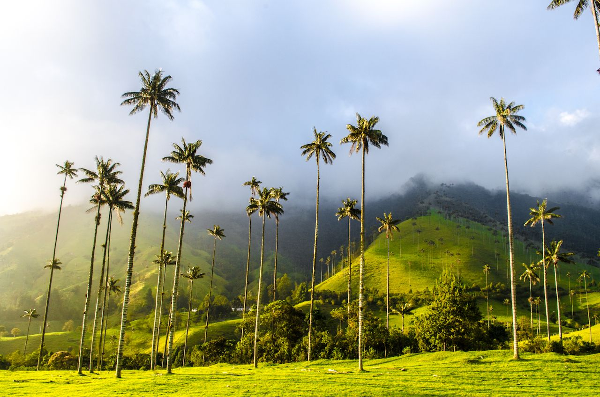
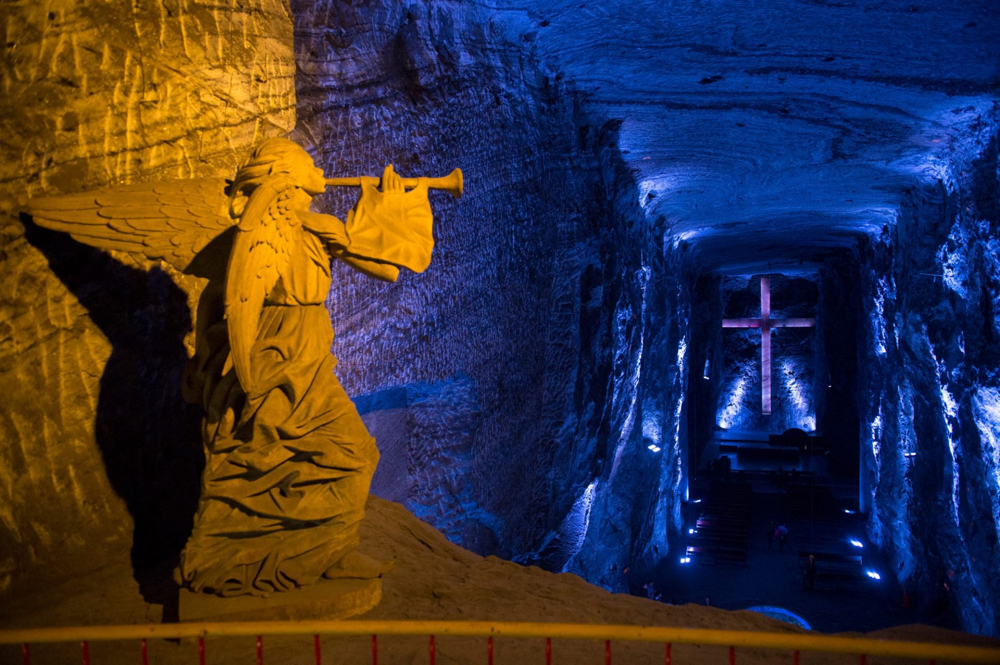
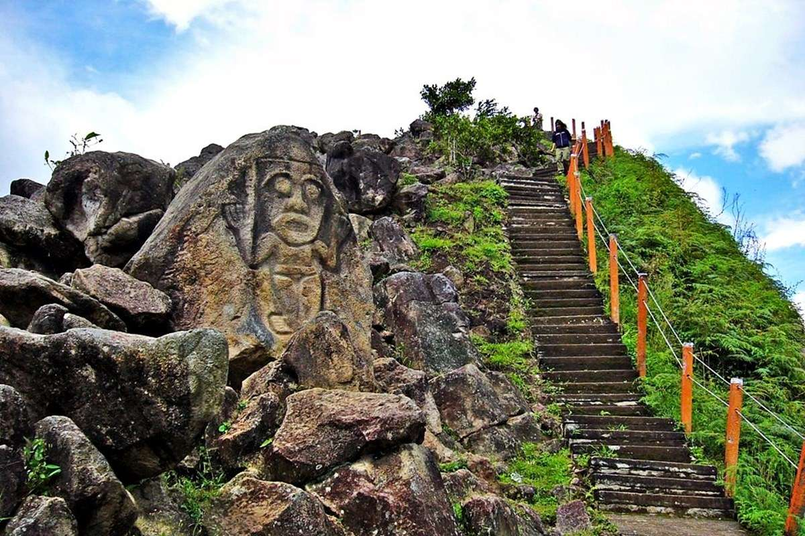
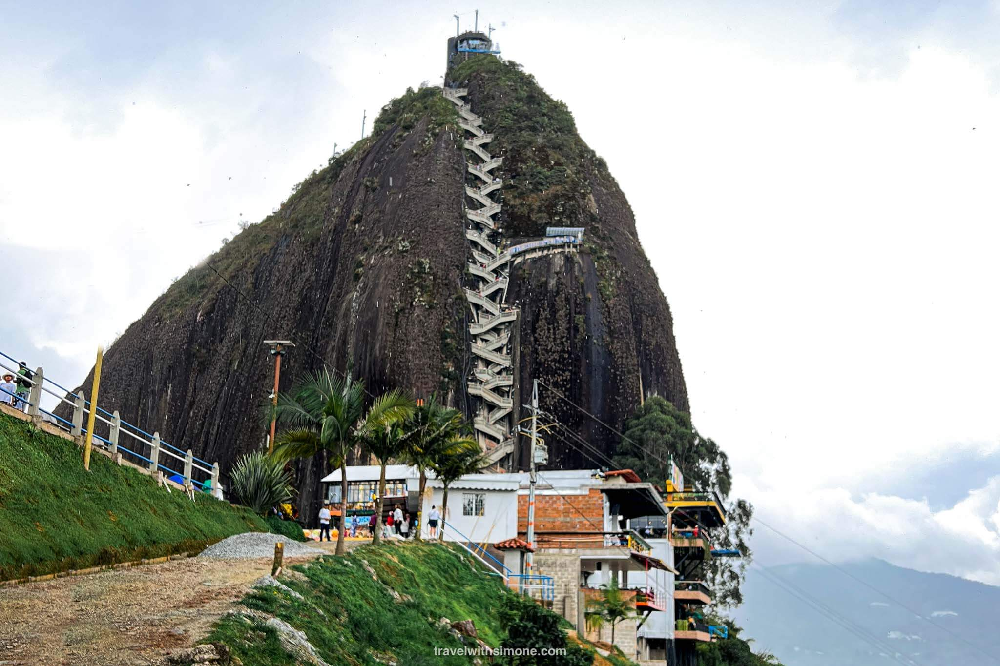
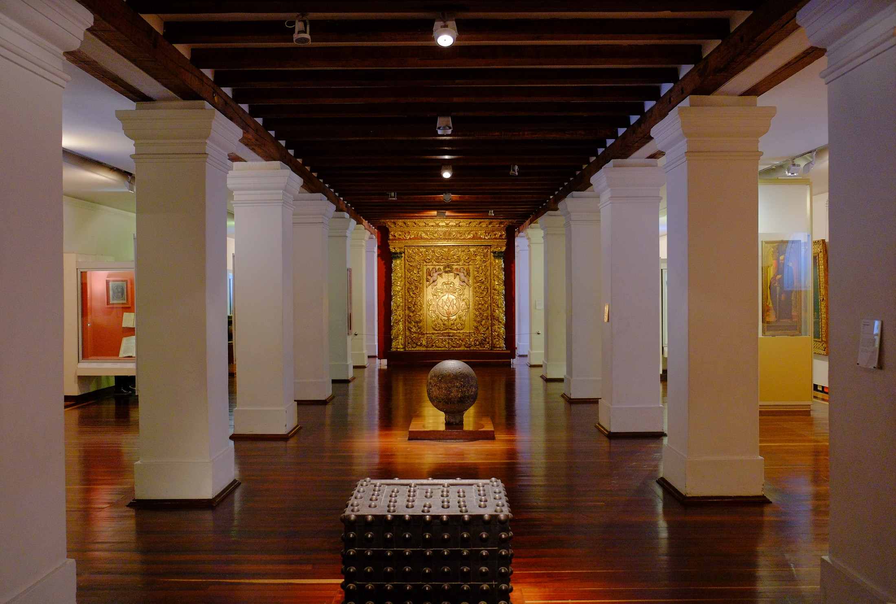
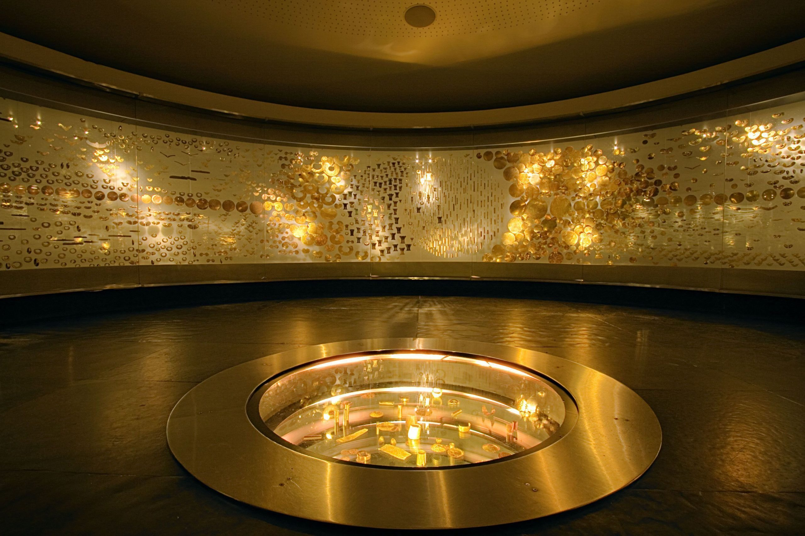
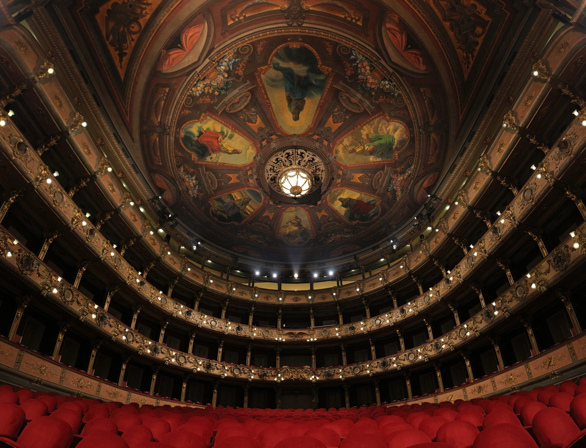
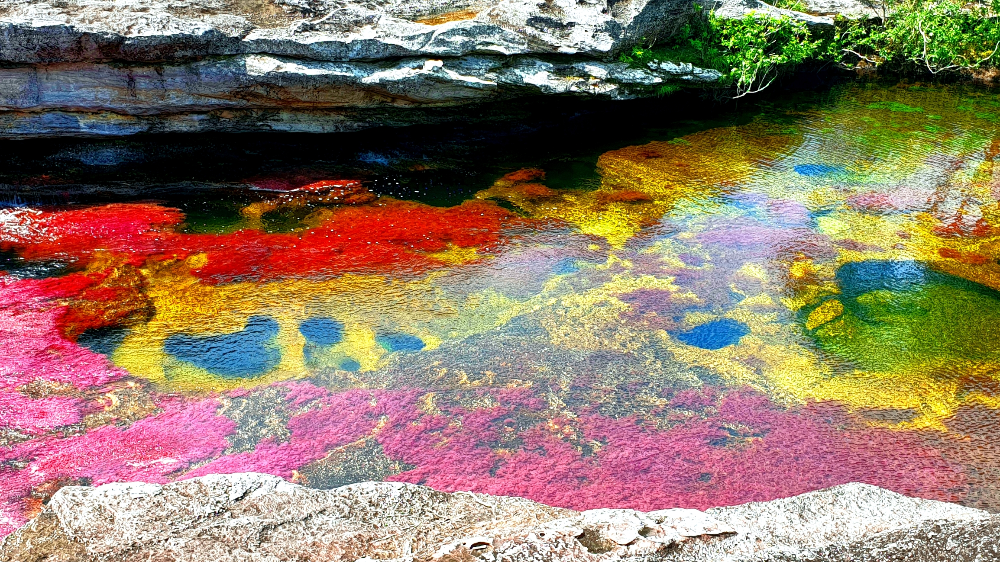

Highlights
Popular Destinations









Colombia calls to travelers who believe the richest journeys awaken both emotion and curiosity. It is a land for those who seek connection over comfort, drawn to the harmony of tradition, creativity, and resilience that defines its soul. Every region hums with rhythm, from mountain towns wrapped in mist to coastlines alive with music and laughter. Authenticity in Colombia is effortless; it flows through the people who share their stories with open hearts.
Imagine the aroma of roasted coffee drifting through Andean valleys, or the beat of drums echoing down cobblestone streets. Picture gold shimmering in ancient artifacts and color spilling from every mural. Across its landscapes, joy and struggle coexist beautifully, reminding travelers that true beauty lies in humanity itself. Colombia is not only seen, it is lived, felt, and remembered long after the journey ends.
The most unforgettable moments in Colombia often appear quietly, between adventure and stillness. A laugh shared over coffee in the hills of Salento, the rhythm of cumbia echoing through Cartagena's streets, or golden light spilling across the rooftops of Villa de Leyva. Meaning isn't found in what you plan, but in the moments that ask you to simply feel.
Each day uncovers another layer of Colombia's warmth and wonder. You might drift through the colors of Guatapé, hike beneath the towering palms of Cocora Valley, or watch the sun sink beyond Tayrona's wild shores. Everywhere, you are met with sincerity and pride from those who call this place home.
Here, the soul of the land unfolds with time. You might stand before the towering palms of Cocora Valley, or share stories with artisans in Cartagena's sunlit plazas. Colombia does not simply enchant; it transforms you, filling your heart and staying with you long after you leave.
Wander through markets alive with color and craft, where woven mochilas, emerald-green ceramics, and hand-tooled leather tell stories of Colombia's regions. Take home locally roasted coffee, cacao, or artisan jewelry.
Savor Colombia's vibrant flavors, from arepas grilled to perfection to fresh ceviche on the Caribbean coast and hearty bandeja paisa in the mountains.
Enjoy a cup of rich Colombian coffee, a glass of fresh lulo juice, or the smooth sweetness of aguardiente shared among friends.
Travel smoothly between Colombia's major regions by domestic flight, long-distance bus, or private car. Scenic routes pass through lush valleys, coffee-covered hills, and coastal plains.
Taxis, ride apps, and local buses make city travel easy and affordable. Many historic centers, like Cartagena and Bogotá's La Candelaria, are best explored on foot.
Leave the cities behind to uncover Colombia's wild heart. From the beaches of Tayrona to the towering palms of Cocora Valley and the quiet charm of mountain villages.
Colombia Standard Time (COT), which is GMT-5. Daylight saving time is not observed.
Uber, DiDi, and inDriver are the main rideshare apps in major cities. Taxis are widely available, though using reputable services or apps is recommended for safety and clear pricing.
Colombia uses 110V electricity with a frequency of 60Hz. Outlets typically support plug types A and B, so most North American devices work without an adapter.
Tropical climate with distinct wet and dry seasons that vary by region. The dry season (December–March, July–August) is generally the most pleasant for travel.
Colombia's stunning scenery has appeared in films and series such as Encanto and Narcos, showcasing its diverse culture and landscapes. The country is also home to global icons like Shakira, Gabriel García Márquez, and Fernando Botero.
Emergency Services: 123
Police: 123
Medical Emergency: 125
Tourist Assistance Line: 01-8000-931-006
Country Code: +57







